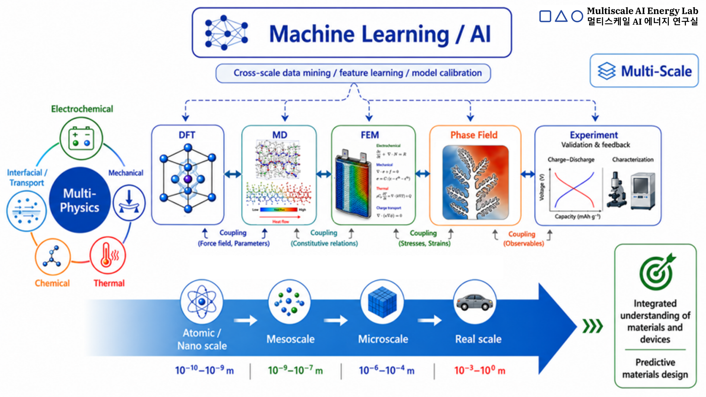

Multiscale · Multiphysics · Machine Learning / AI · Validation
From atoms to devices,
we understand and design energy & functional materials through multiscale analysis
From secondary batteries to thermal transport, electrocatalysis, and piezoelectric / electro-optic materials — we connect physics across length and time scales, pairing multiscale analysis with machine learning / AI technique to predict and design how materials and system behave.
Research Overview · 연구 개요

Why multiphysics · multiscale + AI
- The performance of energy and functional materials is set by coupled electrochemical, mechanical, thermal, chemical, and interfacial phenomena — no single method captures it all.
- DFT (~nm), MD (~100 nm), FEM / phase-field (device scale), and experiment each cover only a limited range of length scales and physics.
- A multiphysics, multiscale approach is therefore essential, and we couple it with machine learning / AI to accelerate prediction and design. (e.g., diffusion-induced stress, crack propagation, dendrite growth, interfacial electro-chemo-mechanical properties)
Length scale ▸ · click to switch ↗
10⁻¹⁰ m — Å → 10⁻³ m — mm
Å · electrons·atoms
Atomic & Electronic structures, reaction energetics, fundamental properties, first-principles
nm · molecules·interfaces
Ion transport, interfacial reactions, thermal properties, SEI formation
μm · microstructure
Phase change, microstructure evolution, crack & mechanical deformation, dendrites
mm · device·cell
Thermal–electrochemical–mechanical coupling at device scale
Machine learning / AI threads across every scale — screening materials and bridging them with surrogate models
Electrochemical experiment — Synthesis, cell assembly and validation in battery systems across scales